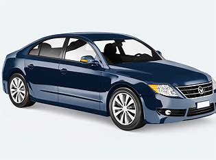
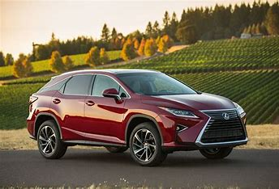
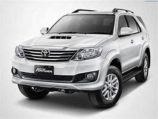

TYPES OF CARS
- SEDAN

- Sedans are a popular car body style with four doors and a separate trunk.
- They are known for their comfortable and spacious interiors.
- Sedans typically have good fuel efficiency, making them cost-effective for daily commuting.
- Sedans offer a smooth and stable ride due to their lower center of gravity
- They come in various sizes, from compact to full-sized, catering to different needs and preferences.
- CROSSOVER

- Crossover cars are a versatile vehicle type that blends features of both SUVs and traditional cars.
- They offer a higher driving position and improved visibility compared to sedans.
- Crossovers are available in various sizes, from compact to midsize, accommodating different passenger and cargo needs.
- They often have all-wheel drive options for better traction on different road conditions.
- Crossovers are popular for their adaptability and spacious interiors, making them a top choice for families and outdoor enthusiasts.
- SPORTS UTILITY VEHICLE(SUV)

- SUVs, or Sports Utility Vehicles, are rugged vehicles designed for off-road capabilities.
- They offer ample interior space and seating for passengers and cargo.
- SUVs come in various sizes, from compact to full-sized, catering to different needs.
- Many SUVs have all-wheel or four-wheel drive for better traction and versatility.
- They are popular for their versatility and are commonly used for family and outdoor adventures.